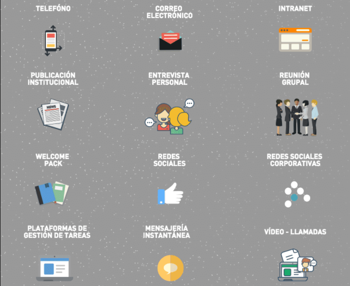
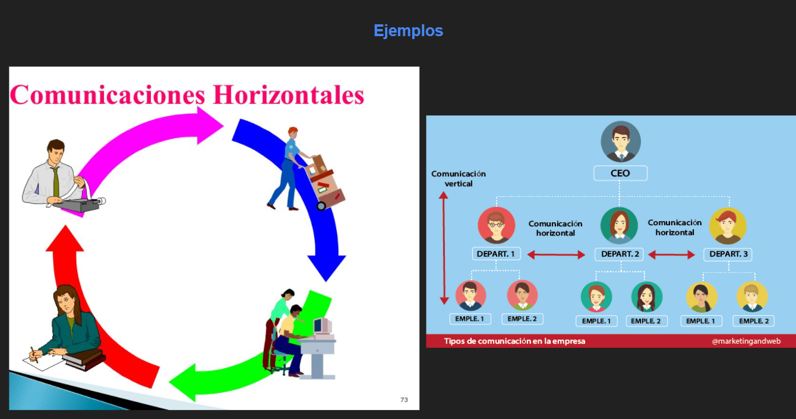

Representacion grafica de la comunicacion interna
Infografia de la comunicacion ascendente y descendente
¿Lo tienes claro ?
Hidden Slides
This slide is visible in the source, but hidden when the presentation is viewed. You can show all hidden slides by setting the `showHiddenSlides` config option to `true`.